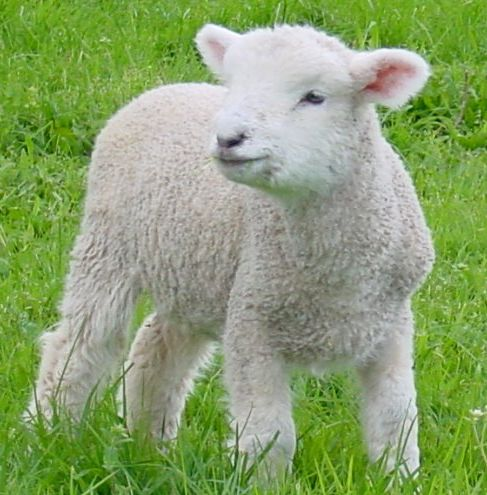
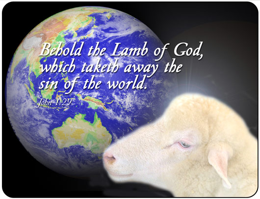

Święto Paschy (hebr. פסח - Pesach, 'przejście') przypada 14 Nissan kalendarza żydowskiego (marzec/kwiecień) po zachodzie słońca. Jest ono ściśle związane z następującym bezpośrednio po nim 7-dniowym Świętem Przaśników [7] i traktowane jako całość. Od czasu, kiedy zbudowano Świątynię w Jeruzalem, Pascha stala sie jednym z tzw. świąt pielgrzymich (hebr. szalosz regalim) (5 Mojż. 16:16, 2 Mojż. 23:14-17, 34:23).
Świeto Pesach upamiętnia noc kiedy Izraelici upuścili Egipt, miejsce swojej niewoli. W ostatni wieczór, przed wyjściem z ‘Eretz Mitzraim’ (ziemia egipska w języku hebrajskim), zgodnie z nakazem Bożym mieli oni spożyć wieczerzę, której najważniejszym daniem był baranek (2 Mojż 12:3-11). Krwią zabitego na ten cel baranka, każdy Izraelita miał oznaczyć drzwi swojego domostwa.
Bardzo ważne było, aby nie zaniechać żadnego ze szczegółów związanych w wyborem tego baranka. Między innymi, miał to być baranek absolutnie bez żadnej skazy, a na sprawdzenie tego były aż 4 dni (2 Mojż. 12:3-6).

Ponadto Bóg ściśle wyznaczył sposób jego przyrządzenia, a nawet spożycia (2 Mojż. 12:8-11). Dlaczego było to takie ważne? W wymiarze ówczesnych wydarzeń, chodziło o ocalenie życia pierworodnych, ponadto podkreślało wagę odzyskania wolności. To wystarczyło, aby każdy Izraelita z bojaźnią dostosował się do tych wszystkich szczegółowych przepisów, łącznie z zaznaczeniem krwią swoich odrzwi.
„A krew ta będzie dla was znakiem na domach, gdzie będziecie. Gdy ujrzę krew, ominę was, i nie dotknie was zgubna plaga, gdy uderzę ziemię egipską. Dzień ten będzie wam dniem pamiętnym i będziecie go obchodzili jako święto Pana; będziecie go obchodzili przez wszystkie pokolenia jako ustanowienie wieczne.” (2 Mojż. 12:13-14, BW)
Dziś wiemy, że każdy szczegół ówczesnej Paschy wybiegał w daleką przyszłość, gdyż Baranek paschalny obrazował Zbawiciela – Baranka Bożego (Jana 1:29). Stąd bezwzględne zalecenia: aby baranek był bez skazy (2 Mojż. 12:5, por. Hebr. 9:14), aby nie łamano żadnej jego kości (2 Mojż. 12:46, por. Jana 19:36), aby jego krwią oznaczyć drzwi swojego domostwa na znak wiary, iż ta krew ocala życie (2 Mojż. 12:22-23, por. Rzym. 5:9).
Istnieje jeszcze szereg innych proroczych obrazów wskazujących na Zbawiciela. Przed Świętem Paschy należało usunąć z domostw wszelki zakwas (2 Mojż. 12:15,19 13:7).
Zakwas symbolizuje grzech, obłudę, złość i przewrotność (Łuk. 12:1, 1 Kor. 5:7-8, Gal. 5:9). Chleb pozbawiony zakwasu (upieczony z ciasta zarobionego wyłącznie z wody i mąki, bez drożdży) - maca, spożywany w Święto Paschy oraz pozostałe 7 dni Święta Przaśników, miał symbolizować bezgrzeszne ciało Chrystusa (ale nie tylko – o czym szerzej w rozdziale o Święcie Przaśników).
W czasie uroczyście obchodzonej w tym dniu wieczerzy (tzw. wieczerza sederowa) pije się cztery kielichy wina, które symbolizują wolność i szczęście. Każdy kielich ma swoją nazwę i oznacza cztery obietnice Boże:

„Wyprowadzę (hoceti) was spod ciężaru robót w Egipcie
Wyratuję (hicalti) was z niewoli
Wybawię (gaalti) was okazując wielką moc i wielkie wyroki
Wezmę (lakachti) was dla siebie jako naród, będę dla was Bogiem.” (2 Mojż. 6:6-8, por. BG i BT)
Znając porządek wieczerzy sederowej, można wywnioskować, iż Jezus wypowiedział słowa zapisane w Ewangeliach (Mat. 26:26-29, Łuk. 22:15-20) właśnie przy trzecim kielichu, "kielichu zbawienia".
To doroczne święto, upamiętniające wyjście z Egiptu i ocalenie pierworodnych wskazuje na doniosłe wydarzenia z udziałem Mesjasza – Baranka Bożego, a ostatecznie wskazuje na zbawienie.
Jak to możliwe, że Żydzi, skrupulatnie wypełniając, do dnia dzisiejszego, te prorocze zapowiedzi ukryte w ceremonii tego święta, jeszcze nie zdali sobie sprawy z ich głębi? Są podstawy, aby sądzić iż wkrótce to nastąpi.
Zwróćmy uwagę na jeden z istotnych szczegółów.
Pesach jest nazywane dniem ocalenia pierworodnych, ponieważ baranek paschalny był ofiarą wykupu za ocalonych pierworodnych.
„I powiesz do faraona: Tak mówi Pan: Moim synem pierworodnym jest Izrael. Mówię do ciebie: Wypuść syna mojego, aby mi służył. Jeśli będziesz się wzbraniał od wypuszczenia go, Ja zabiję twego syna pierworodnego.” (2 Mojż. 4:22-23,*BW)
Zatem w szerszym kontekście Baranek Boży okazał się wykupem za życie Jego pierworodnego – Izraela.
Dlatego Apostoł Jan napisał:
„On ci jest ubłaganiem za grzechy nasze, a nie tylko za nasze, lecz i za grzechy całego świata.” (1 Jana 2:2, BW, por. Rzym. 1:16)
Biblia często mówi o pierworodnych oraz o pierwocinach plonów, które zawsze miały być poświęcone Bogu (2 Mojż. 13:2, 34:19). Oczywiście przede wszystkim, ma to znaczenie w odniesieniu do Jezusa, jako pierworodnego Syna Bożego (Kol. 1:15), pierworodnego z umarłych (Obj. 1:5), ale w dalszym kontekście odnosi się do Izraela (por. Oz. 11:1):
Co oznacza Egipt?
Egipt to po hebrajsku ‘Micraim’ (rdzeń tego słowa: ‘mecar’ znaczy: uciskać, dusić, zwężać). Egipt jest symbolem ucisku i zniewolenia.
Czy słowa „Jam jest Pan, Bóg twój, który cię wyprowadził z ziemi egipskiej, z domu niewoli.” (2 Mojż. 20:2, BW), rzeczywiście wypełniły się na Żydach, jako obietnica wolności i wyzwolenia z jarzma obcego narodu? Czy w zamierzeniu Bożym miejsce faraona mieli zająć inni ciemiężyciele?
Wiele wydarzeń w Biblii jest proroczą zapowiedzią czegoś, co wypełnia się potem na większą skalę. Tak też będzie i w tym przypadku. Wyjście z Egiptu i wejście do ziemi obiecanej było częściowym spełnieniem się tych zapowiedzi. Pismo Święte obiecuje Żydom całkowite wyzwolenie od nieprzyjaciół i bezpieczną przyszłość na wieki (Am. 9:15, Izaj. 35:10). Zainteresowanych szczegółami zachęcam do przeczytania opracowania pt. „Izrael – duchowy czy cielesny? [8]” (rozdz. 18 [9]), zamieszczonego na tej witrynie.
Skoro Żydzi czekają jeszcze na osiągnięcie pełni swojego wyzwolenia - i dlatego obchodzą to święto, to czy można powiedzieć, że proroczy obraz Święta Paschy wypełnił się dla chrześcijan (Hebr. 10:10-12)? Czy jesteśmy już: ‘wyprowadzeni, wyratowani, wybawieni i wzięci’?
„Mimo że wiecie już raz na zawsze wszystko, to jednak pragnąłbym wam przypomnieć, że Pan, który wyprowadził naród [izraelski] z niewoli egipskiej, wytracił jednak później tych wszystkich, którzy nie wierzyli.” (Judy 3:5, BW-P)
Tak więc, wyprowadzenie z niewoli egipskiej nie oznaczało jeszcze wejścia do obiecanej ziemi. Paradoks? Przecież wszyscy Izraelici opuszczając Egipt mieli przed sobą cel - otrzymać tę ziemię. Inaczej, nie ruszaliby się z miejsca. A jednak, ze wszystkich 600 tysięcy mężczyzn oraz setek tysiecy kobiet, weszły tam tylko dwie osoby: Jozue i Kaleb! Pozostali - to nowe pokolenie, dzieci tych, którzy z powodu niewiary pomarli na pustyni.
Rozważmy głęboko ten przykład, który Juda napisał dla naszego pouczenia (Rzym. 15:4). Obyśmy wyprowadzeni z niewoli grzechu, ku zbawnieniu - naszej ziemi obiecanej - również nie pomarli z powodu niewiary, zanim dokona się pełnia naszego zbawienia i ziści się sens czwartego kielicha "wzięci".
Z uwagi na fakt, iż nam poganom została odsłonięta Ewangelia - a jeszcze nie wszystkim Żydom - może nam się tylko wydawać, że wyprzedzamy ich pod jakimś względem. Niestety tak nie jest. My możemy jedynie uznać, że zostaliśmy wyprowadzeni z niewoli tego świata - tylko w wymiarze duchowym - podczas gdy Żydzi już po raz drugi w sensie fizycznym wchodzą do swojej ziemi obiecanej (patrz opracowanie „Izrael – fizyczny czy duchowy [8]", rozdz. 9 [10]). Nie weszliśmy jeszcze do odpocznienia Bożego - tak jak i Żydzi. Zatem ani oni, ani my nie żyjemy jeszcze w Królestwie Bożym:
„Wiemy bowiem, że całe stworzenie wespół wzdycha i wespół boleje aż dotąd. A nie tylko ono, lecz i my sami, którzy posiadamy zaczątek Ducha, wzdychamy w sobie, oczekując synostwa, odkupienia ciała naszego.” (Rzym. 8:22-23, BW)
„A tak pozostaje jeszcze odpocznienie dla ludu Bożego; kto bowiem wszedł do odpocznienia jego, ten sam odpoczął od dzieł swoich, jak Bóg od swoich. Starajmy się tedy usilnie wejść do owego odpocznienia, aby nikt nie upadł, idąc za tym przykładem nieposłuszeństwa.” (Hebr. 4:9-11, BW)
I chociaż ofiara Jezusa Chrystusa w pełni zaspokaja możliwość naszego zbawienia, jednak ciągle jest to potencjalna możliwość. Zważmy na słowa:
„A kto wytrwa do końca, ten będzie zbawiony.” (Mat. 24:13, BW)
Nawet Apostoł Paweł napisał:
„ale umartwiam ciało moje i ujarzmiam, bym przypadkiem, będąc zwiastunem dla innych, sam nie był odrzucony.” (1 Kor. 9:27, BW). Czy uważamy się za kogoś lepszego albo duchowo mocniejszego od niego?
Rozumienie symboliki tych świąt w odniesieniu do Mesjasza, to uzmysłowienie sobie, że tym barankiem paschalnym jest nasz Zbawiciel. Pozwala to odczuwać całą pełnię i istotę przesłania, która w tym święcie jest skierowana do całej ludzkości - skoro Baranek Boży gładzi grzech całego świata (Jana 1:29).

Niektórzy uważają jednak, że Pascha jest świętem typowo żydowskim, a chrześcijanie powinni obchodzić Pamiątkę Wieczerzy Pańskiej, którą ustanowił Jeszua (Jezus).
Oczywiście, można byłoby 'okroić' całą wieczerzę sederową i wznieść tylko trzeci kielich oraz spożyć symbolicznie kawelek macy. Jednakże ukryta głębia całej wieczerzy sederowej zaskakuje ilością elementów mesjańskich.
Przykładem może być poszukiwany po wieczerzy afikoman (schowany na jej poczatku kawałek macy), który symbolizuje ukryte na czas śmierci ciało Mesjasza, a jego odnalezienie - ujrzenie Go zmartwychwstałego.
Ponadto, rozważanie wyjścia z niewoli (Egiptu, który obrazuje niewolę tego świata oraz pęta grzechu), przedstawionej jako smak gorzkich ziół i słonej wody - łez zniewolenia.
Poznanie tych oraz wielu innych szczegółów, poprzez osobiste przeżywanie i uczestniczenie w nich, może niezmiernie ubogacić naszą wiarę. Dlatego właśnie, coraz więcej bogobojnych chrześcijan przyłącza się do celebrowania tego święta wraz z Żydami mesjańskimi, chcąc naśladować naszego Mistrza i Pana.
Gdyby Jeszua chciał znieść Święto Paschy, to po prostu by go nie obchodził. Natomiast On zawarł Nowe Przymierze (Mat. 26:28) podczas, a nie zamiast tej uroczystości.
Zastanówmy się też, dlaczego Apostołowie i pierwsi chrześcijanie obchodzili Paschę (Jana 2:13, Mat. 26:19, Dzieje 20:6)?
Co wobec tego oznacza naśladowanie Chrystusa?
„Bądźcie naśladowcami moimi, jak i ja jestem naśladowcą Chrystusa.” (1 Kor. 11:1, BW)
„Bądźcie naśladowcami moimi, bracia, i patrzcie na tych, którzy postępują według wzoru, jaki w nas macie.” (Filip. 3:17, BW)
Także fakt, iż w starożytnym Izraelu Paschę mogli obchodzić także cudzoziemcy ma tu proroczą wymowę:
„A jeżeli zamieszka u was obcy przybysz i chce obchodzić Paschę dla Pana, to niech uczyni to według przepisów i praw dotyczących Paschy; jednakowy jest przepis dla was, zarówno dla obcego przybysza jak dla tubylca.” (4 Mojż. 9:14, BW)
Dlatego też, ciągle oczekujmy na nasze wyzwolenie upatrując w symbolice, jaką obrazuje Pascha, głębokich treści sięgających, aż do naszego zbawienia, kiedy to: „stworzenie będzie wyzwolone z niewoli skażenia ku chwalebnej wolności dzieci Bożych” (Rzym. 9:21, BW).
Film o żydowskim święcie Paschy i jego chrześcijańskim znaczeniu.
Czesc 1
Czesc 2
Czesc 3
Czesc 4
---------------------
* wytłuszczenia w cytatach biblijnych - autor opracowania